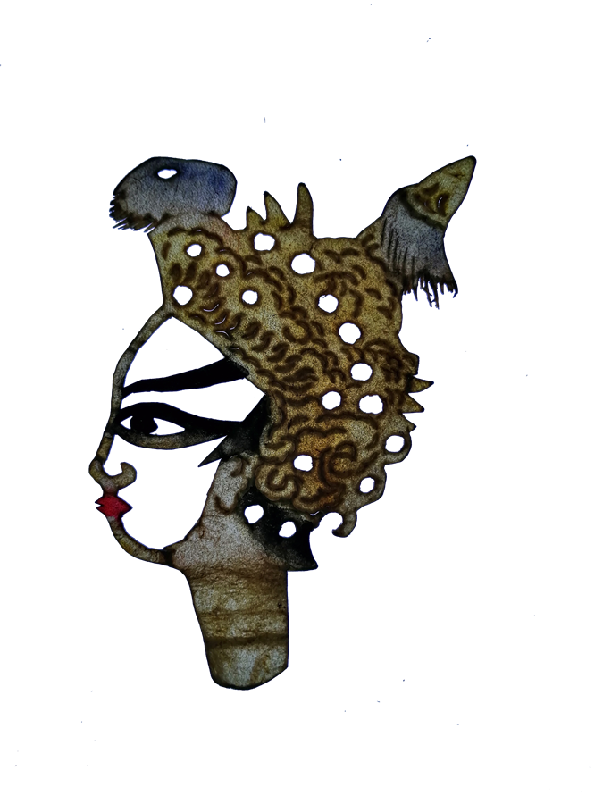
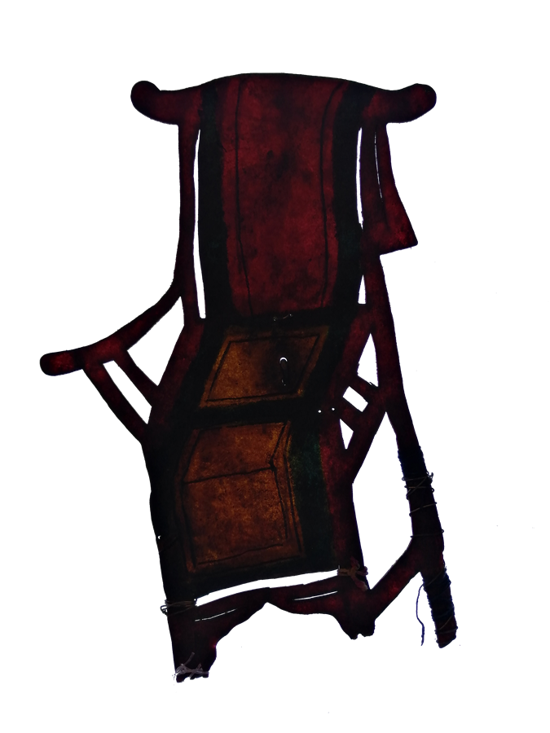
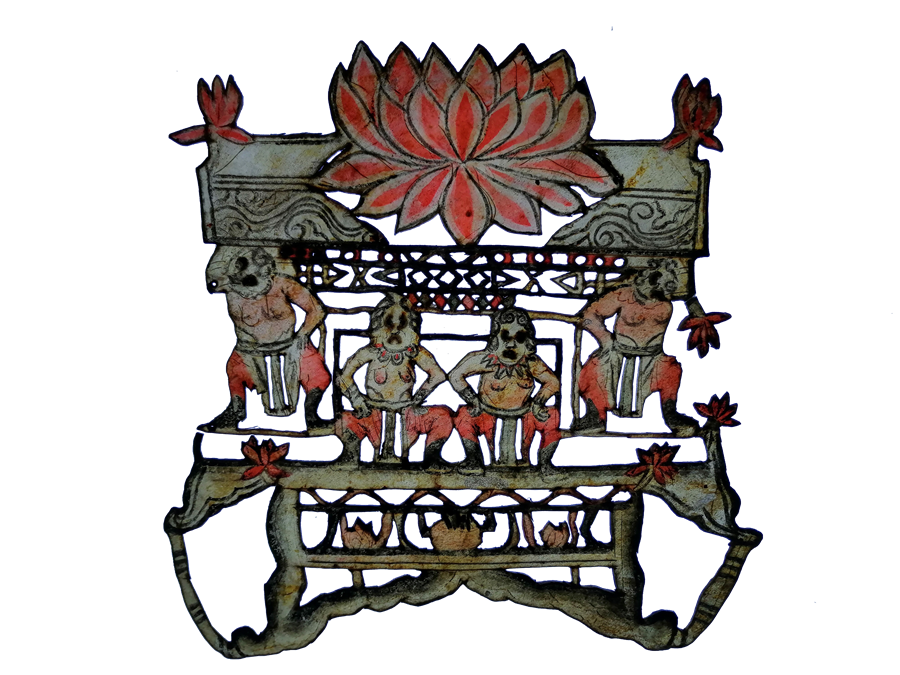
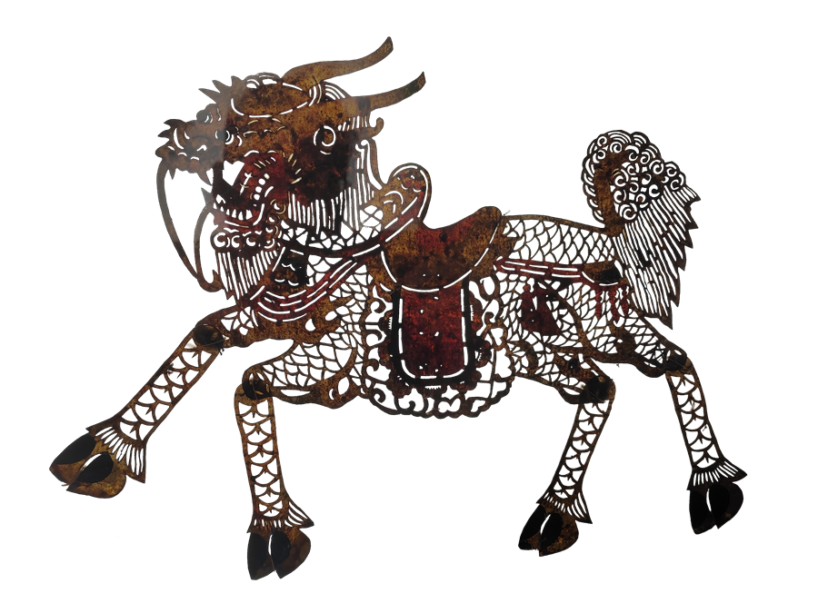
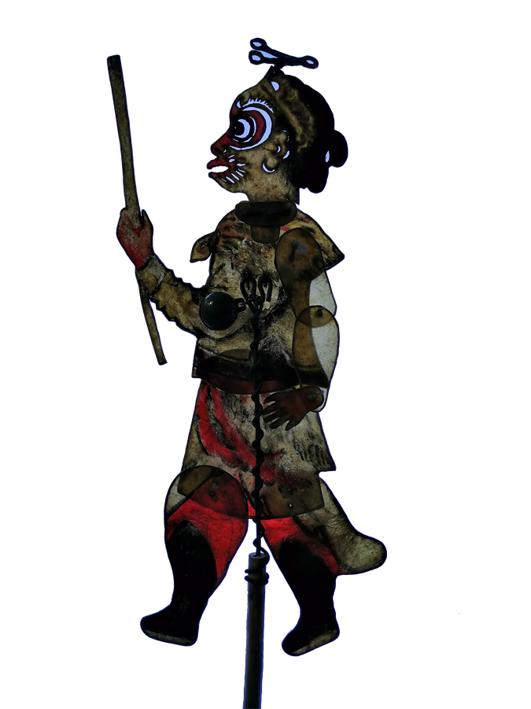
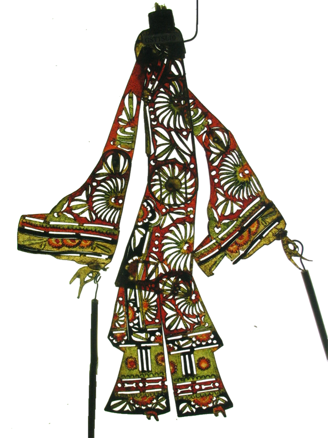

影箱六器
影箱里装的不只是「一个人的影子」。头茬单放一格，戳子单放一格，砌末、衬景、坐骑各占一处。换戏的时候，换头、换景、换坐骑，身子往往还是那一件——一套完整的影箱通常在六十到一百二十件之间。
各归其位
左右拨动切换 · 悬停即停影偶是拆开装箱的。头、身、手、腿各成一件，靠关节处的皮绳与竹杆连起来，所以一只人偶能卧、能跪、能翻身。下面六件是影箱里最常见的几种，全部取自馆藏实物。
六件自动轮换，三秒一换；也可点两侧箭头、下方短横，或左右拨动切换。鼠标在图上停住两秒以上，轮换便暂停，方便细看。六件均为馆藏实物拍摄，非复原、非示意；五件清代，龙首驹为中华人民共和国时期。






头茬
一颗头定行当。这具韦陀专用头茬，刻纹盘绕、眉眼压得极低，眼与口都刻空——隔着亮子看，只剩一道黑影。头茬单独装箱，换戏只换头，身子接着用。
图片取自中国美术学院民艺博物馆「皮影数字博物馆」藏品库，均为馆藏实物拍摄，仅供本站教学展示；各件年代、地域、尺寸以馆方著录为准。
三百帧
附 · 藏品影像录影箱六器是挑出来的六件，撑不起一座馆。下面这些是馆藏里成批的实物照，按影戏的行当分七类：头茬（头）、鞦子（头身连刻的整身）、戳子（只换衣裳的身子），再加大件的砌末、衬景、动物，和辽宁喀左的影卷封面，出自河北、河南、陕西、甘肃、湖北、湖南、浙江、江苏、安徽、北京、四川、云南、辽宁十三地。按类、按行当、按省逐层筛，点开任一张，看的就是这件东西自己的著录。
页内图为教学用压缩件（统一 1000×1250 画幅，单张约 120–170KB，原片画幅不符者按原背景向外延展补足），原始大图与馆方详情见每张里的「馆藏记录」。年代、地域、尺寸、来源均照馆方著录，未作改写；「说明」为馆方原文，题名下的灰字是这一细类在影戏里的通行说法（类目释义），不是对某一件的考订。
图像与著录：中国美术学院民艺博物馆「皮影数字博物馆」藏品库（shadow.caa.edu.cn）；影卷为辽宁喀左手抄演出本，封面与扫描件由该馆数字化。本页仅作教学展示，版权归原馆及捐赠者所有。